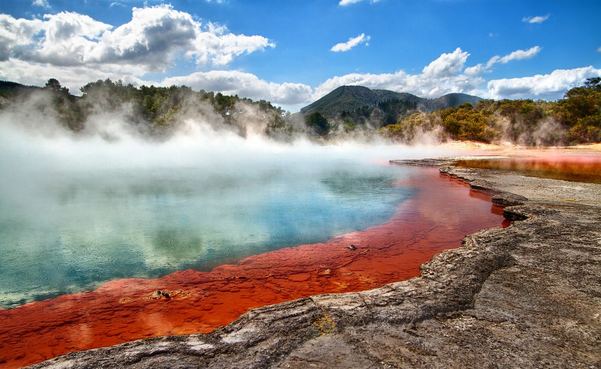
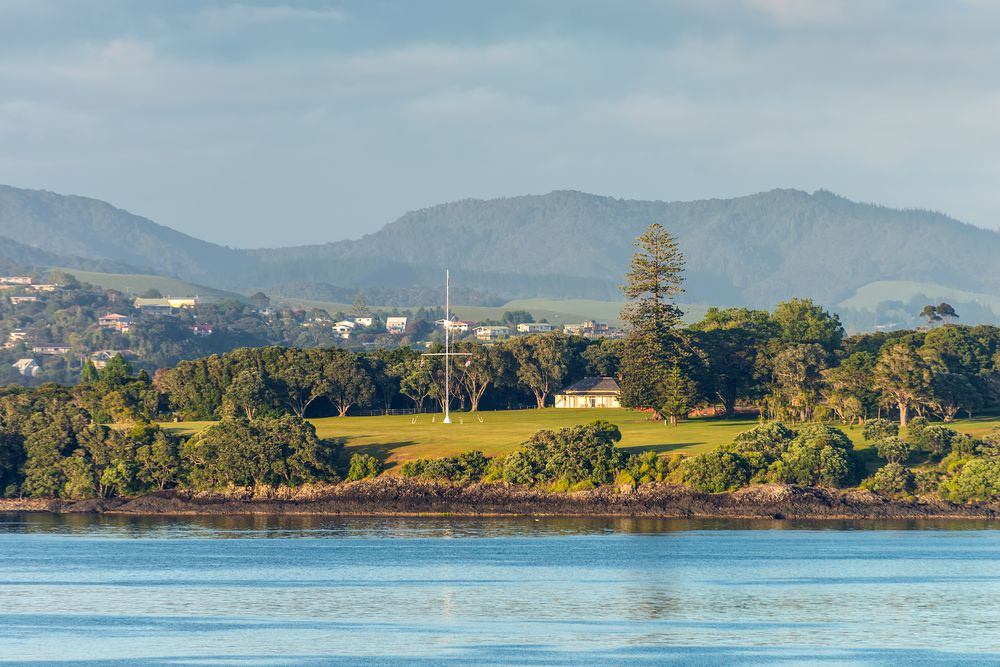
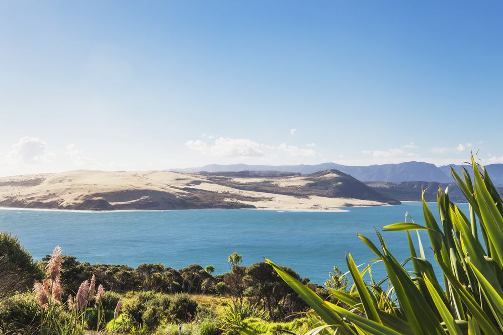
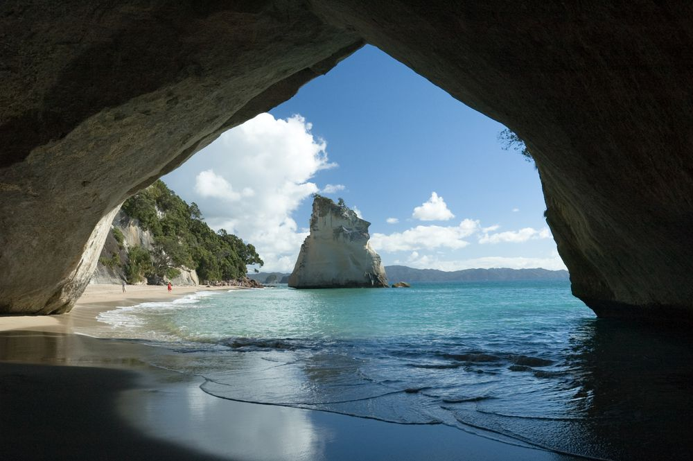
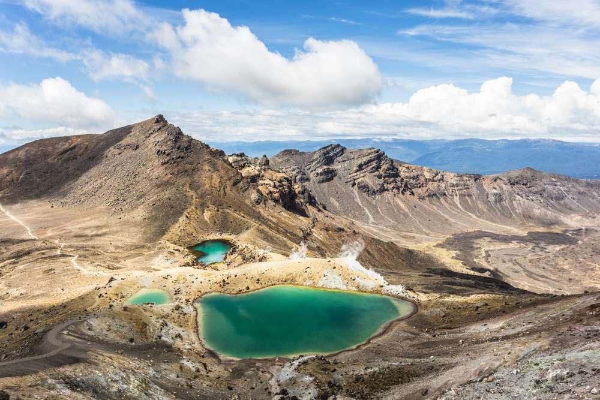
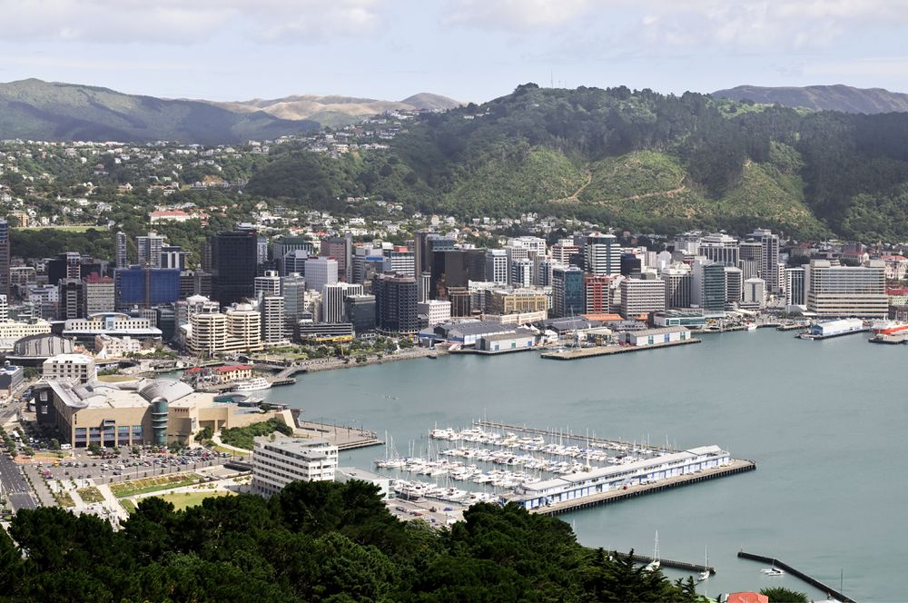
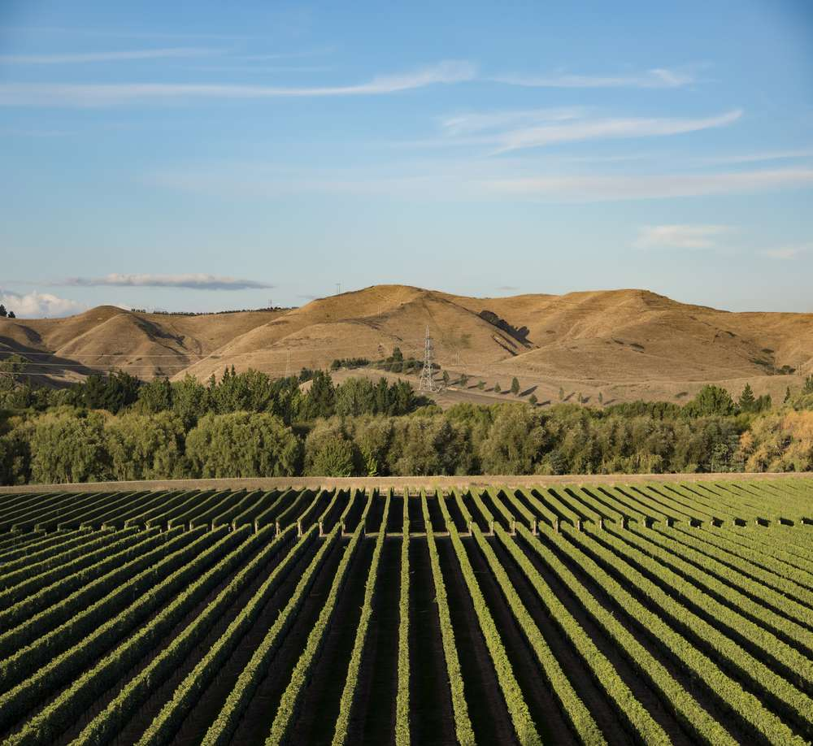

New Zealand is an otherworldly, photogenic and friendly country offering visitors unbeatable changes for adventure and exploration. The rugged islands are home to dense native forests, mountains, beaches, glaciers, thermal regions and fiords that have been well-preserved by the environmentally-conscious government and culture. New Zealand is a place where traditional Maori culture mixes with modernity in cosmopolitan cities, charming villages and vast expanses of untouched wilderness. Pristine and heavenly, the island nation has something for everyone, including the following top tourist attractions in New Zealand.

Rotorua ( In the central North Island, Rotorua is famous for its geothermal features and Maori culture. Travelers short on time can visit on a day trip from Auckland )

Waitangi ( Waitangi is one of the most significant places in New Zealand's modern history. There are beautiful views of the Bay of Islands.)

Hokianga Harbour (The Hokianga Harbour is an alternative to the Bay of Islands that’s especially good for camping or RV adventures )

Coromandel Peninsula ( It’s a microcosm of all that’s good in northern New Zealand—stunning beaches, hiking trails, and arty, laid-back towns )

Tongariro National Park ( On the central plateau of central North Island, it's a dual UNESCO World Heritage Site, listed both for its natural and cultural significance )

Wellington ( At the bottom of the Central North Island, Wellington is New Zealand’s capital. Wellington is a perfect small city to explore )

Hawke's Bay (one of New Zealand’s premier wine-producing regions, there are atleast 200 vineyards this region )